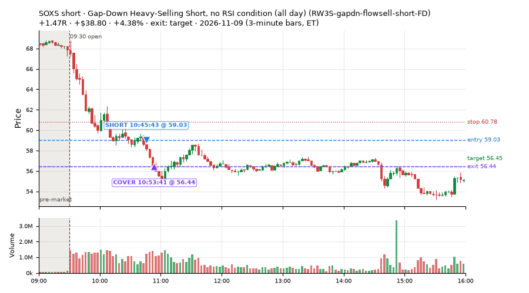
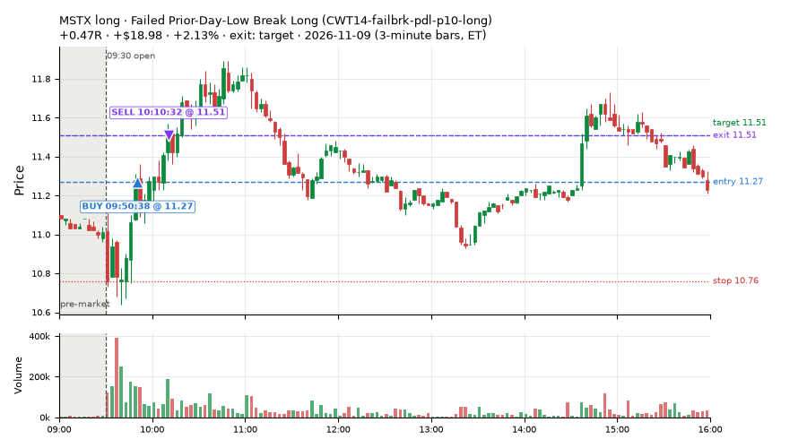
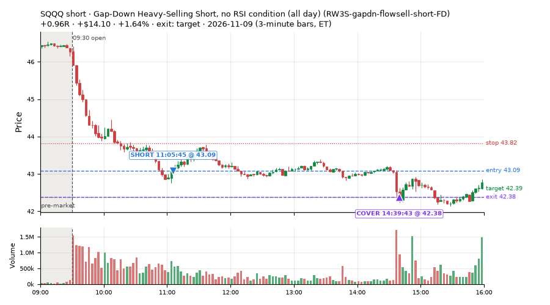
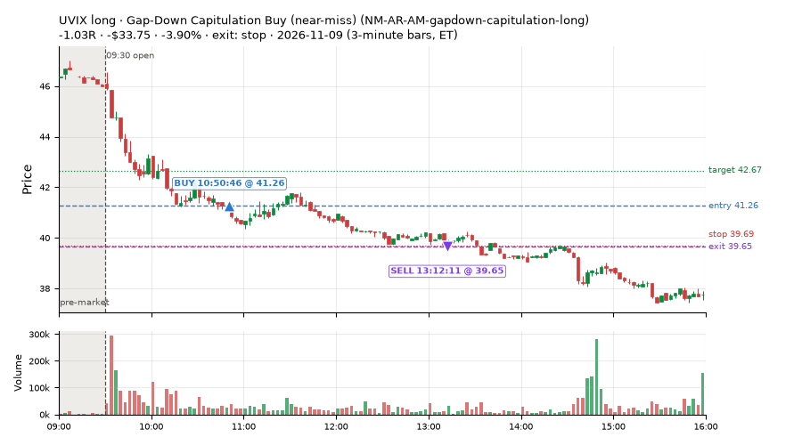
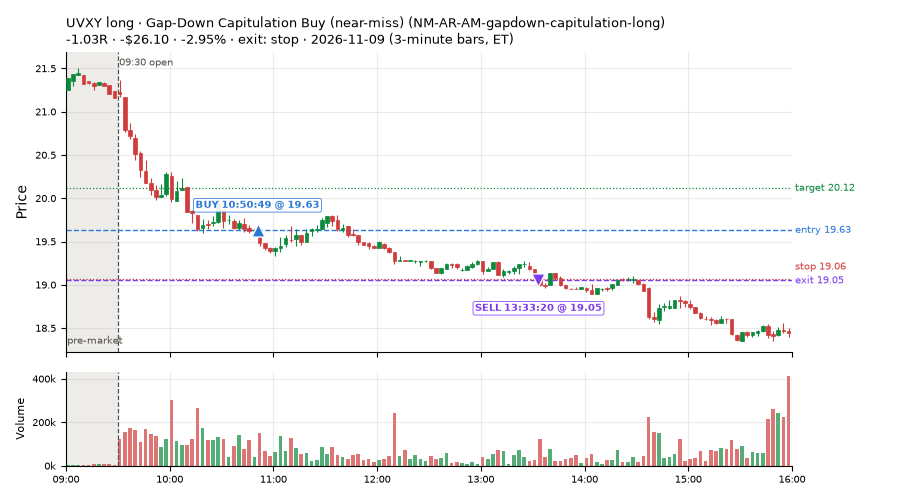
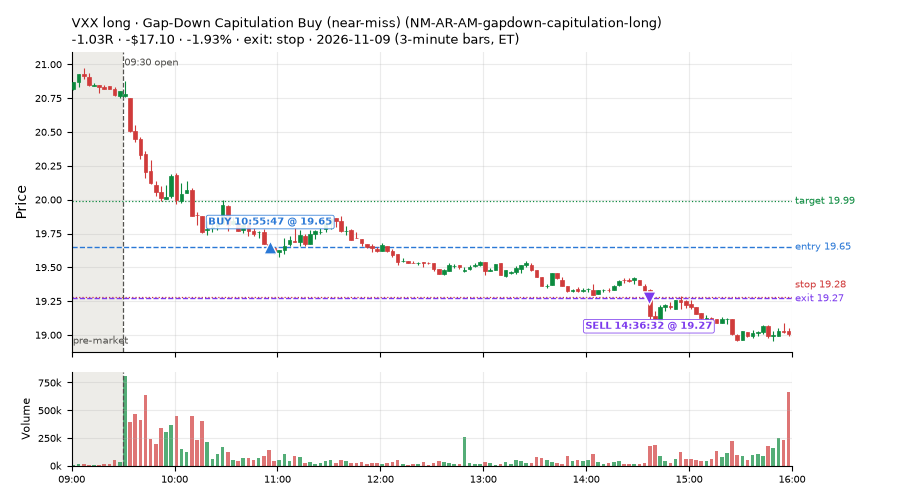
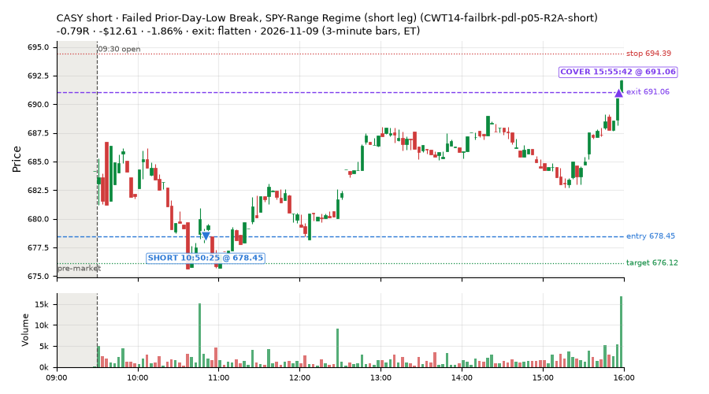
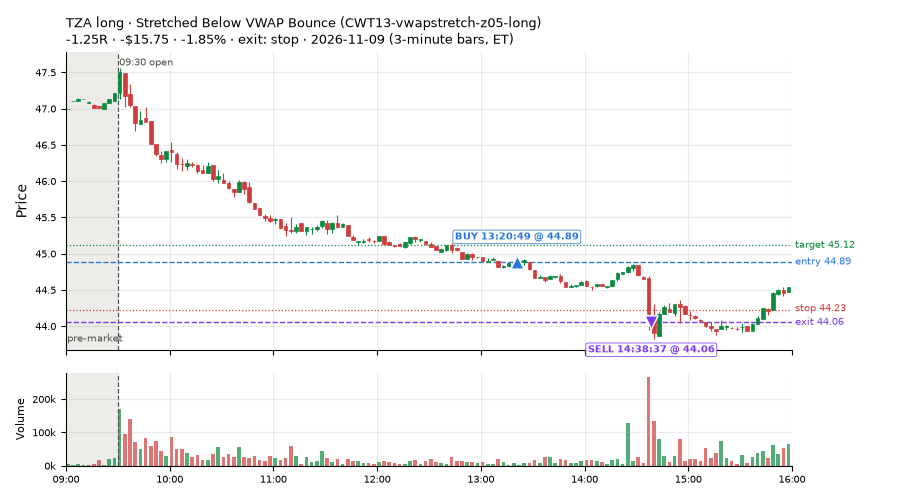

53 trades · win rate 60% · P/L $-64.28
PROBATION: no live setup has passed both locked test periods. 10 owner-directed setups added 2026-10-08 (MarcoFlow top 5 + 5 new), untested live. RW6G1 (RW6 + VWAP band guard) added 2026-10-09, probation.

| Symbol | Setup | Side | In | Out | Entry | Exit | Exit reason | % gained | P/L |
|---|---|---|---|---|---|---|---|---|---|
| SOXS | Gap-Down Heavy-Selling Short, no RSI condition (all day) (RW3S-gapdn-flowsell-short-FD) | short | 10:45 | 10:53 | 59.03 | 56.44 | target | +4.38% | $38.80 |
| MSTX | Failed Prior-Day-Low Break Long (CWT14-failbrk-pdl-p10-long) | long | 09:50 | 10:10 | 11.27 | 11.51 | target | +2.13% | $18.98 |
| SQQQ | Gap-Down Heavy-Selling Short, no RSI condition (all day) (RW3S-gapdn-flowsell-short-FD) | short | 11:05 | 14:39 | 43.09 | 42.38 | target | +1.64% | $14.10 |
| Symbol | Setup | Side | In | Out | Entry | Exit | Exit reason | % lost | P/L |
|---|---|---|---|---|---|---|---|---|---|
| UVIX | NM-AR-AM-gapdown-capitulation-long | long | 10:50 | 13:12 | 41.26 | 39.65 | stop | -3.90% | $-33.75 |
| UVXY | NM-AR-AM-gapdown-capitulation-long | long | 10:50 | 13:33 | 19.63 | 19.05 | stop | -2.95% | $-26.10 |
| VXX | NM-AR-AM-gapdown-capitulation-long | long | 10:55 | 14:36 | 19.65 | 19.27 | stop | -1.93% | $-17.10 |
| CASY | CWT14-failbrk-pdl-p05-R2A-short | short | 10:50 | 15:55 | 678.45 | 691.06 | flatten | -1.86% | $-12.61 |
| TZA | CWT13-vwapstretch-z05-long | long | 13:20 | 14:38 | 44.89 | 44.06 | stop | -1.85% | $-15.75 |








Signal to fill: median 2s, 90th percentile 3s (53 trades). Bars close each minute; the order follows the bar close.
Best excursion (MFE): median 0.37R; worst (MAE) median 0.51R. 36% of trades never got +0.25R in our favour; 0 reached +1R and still closed at or below 0.
| Symbol | Setup | Best R | Worst R | Closed R |
|---|---|---|---|---|
| VXX | NM-AR-AM-gapdown-capitulation-long | +0.62 | -1.14 | -1.03 |
| OKTA | NS4-pm-vwap-reclaim-oversold-short | +0.42 | -1.21 | -1.21 |
| SNDK | NS4-pm-vwap-reclaim-oversold-short | +0.56 | -1.04 | -1.00 |
| CRS | exhaustion_short-FD | +0.77 | -0.81 | -0.67 |
| MDB | NS4-pm-vwap-reclaim-oversold-short | +0.23 | -1.43 | -1.18 |
| Entry time | Trades | Win | Avg R | P/L |
|---|---|---|---|---|
| 09:50-10:30 | 8 | 100% | +0.38 | $51.10 |
| 10:30-11:30 | 23 | 48% | -0.15 | $-73.31 |
| 11:30-13:00 | 8 | 75% | +0.03 | $1.22 |
| 13:00-14:00 | 10 | 40% | -0.47 | $-49.68 |
| 14:00-16:00 | 4 | 75% | +0.05 | $6.39 |
| Setup | Trades | Win | Avg R | Adj R (net of SPY) | Avg R ex-market (all sessions) | P/L |
|---|---|---|---|---|---|---|
| Stretched Below VWAP Bounce (CWT13-vwapstretch-z05-long) | 1.0 | 0% | -1.25 | -1.45 | +0.01 (beta +1.39, n 261) | $-15.75 |
| Failed Prior-Day-Low Break, SPY-Range Regime (short leg) (CWT14-failbrk-pdl-p05-R2A-short) | 9.0 | 78% | -0.06 | +0.03 | -0.09 (beta -0.60, n 22) | $-4.40 |
| Failed Prior-Day-Low Break Long (CWT14-failbrk-pdl-p10-long) | 13.0 | 92% | +0.29 | +0.10 | -0.07 (beta +1.37, n 543) | $52.27 |
| Failed Prior-Day-Low Break Long (0.1 ATR, low volume) [fill] (CWT14-failbrk-pdl-p10-lowvol-long) | 7.0 | 71% | -0.01 | -0.24 | -0.06 (beta +1.57, n 228) | $-6.74 |
| Generated: Z12lem1p9, FlowShiftlem0p96 AM short (BRopgt0p5, t1s1) (GEN-261022-07-Z12lem1p9-FlowShiftlem0p96-ATRdge3p6-AM-BRopgt0p5-t1s1-short) | 1.0 | 0% | -1.06 | -0.74 | – | $-9.60 |
| Sellers into Strength (all day) (MF5-flowsell-vwapup-rsi5hi) owner-directed; holdouts once: Sep-Oct -0.001R n264, Apr-Jun -0.010R n1199 | 3.0 | 100% | +0.83 | +1.09 | +0.49 (beta -0.92, n 16) | $13.45 |
| Gap-Down Capitulation Buy (near-miss) (NM-AR-AM-gapdown-capitulation-long) | 4.0 | 0% | -1.02 | -1.16 | -0.41 (beta +1.30, n 54) | $-88.16 |
| Afternoon VWAP Reclaim Fade (NS4-pm-vwap-reclaim-oversold-short) owner-directed; holdouts once: Sep-Oct -0.086R n49, Apr-Jun -0.080R n342 | 6.0 | 17% | -0.82 | -0.67 | -0.17 (beta -1.54, n 16) | $-47.49 |
| Gap-Down Heavy-Selling Short, no RSI condition (all day) (RW3S-gapdn-flowsell-short-FD) | 3.0 | 67% | +0.42 | +0.59 | -0.24 (beta -1.41, n 143) | $44.70 |
| exhaustion_short-FD | 6.0 | 33% | -0.06 | +0.03 | -0.20 (beta -1.40, n 85) | $-2.56 |
Market direction (SPY, beta 1) accounted for $-1.05 of today's $-64.28; the rest ($-63.23) came from the setups themselves. Avg R net of SPY: -0.11 (incl. a hedge leg's cost; report only).
17 setups live today. Today: 102 signals, 53 taken, 8 lost because another setup held the symbol (8%). Since 2026-10-12 (21 sessions): 9667 signals, 4866 taken, 715 lost to other setups (7%). Peak open positions today 26 of 400 slots. Earnings blackout removed 1439 symbols before scanning.
Simulated playing time (not live): 4784 what-if trades of signals not taken, avg -0.08R, 58% winners; of them 715 lost to another setup (avg -0.20R).
Silent: LD4-st4-breadthup-t1s05-long, LD8-spy-dip030-breadthturn-spxl-holdtr-long, LD1-ns1-breadthup-t05s1-long, CWT04-backside-lh-a25-short, CWT04-backside-vwaptest-a25-short · Crowded out: MF5-flowsell-vwapup-rsi5hi, CWT14-failbrk-pdl-p05-R2A-short, NS3-failed-vwap-reclaim-short-FD · Starved: exhaustion_short-FD, NS5-sma50-flush-oversold-long-FD, RW4-ns3-adv150-short-FD, MF2-open-rsimidhi-flowsell
| Prio | Setup | Today sig / taken | Sessions | Signals / taken / trades | Taken/day | Expected/day | Lost to other setups | Lost to (setup n) | Top skip reasons | SIMULATED: not-taken n / avg R / win | Verdict |
|---|---|---|---|---|---|---|---|---|---|---|---|
| 1 | Big Loser VWAP Reclaim Fade, Morning, Wide Stop NS3V1-am-widestop-short | 1 / 0 | 12 | 86 / 42 / 42 | 3.50 | 5.30 | 3 | NS3V1-am-widestop-short 3, NM-RWR3-ns3-qqqup-early-short 1, NM-RWN3-ns3-spyup-early-short 1 | spread / quote / size 21, not shortable / shorts off 20, symbol held by another setup 3 | 44 / -0.06R / 57% | ok 17.5 entries/week |
| 2 | Gap-Down Capitulation Buy (near-miss) NM-AR-AM-gapdown-capitulation-long | 4 / 4 | 16 | 82 / 54 / 54 | 3.38 | – | 0 | – | spread / quote / size 27, other 1 | 28 / -0.17R / 43% | ok 16.9 entries/week |
| 3 | Afternoon Higher-Low Long (near-miss) NM-HL-T75-pm-long | 0 / 0 | 16 | 57 / 50 / 50 | 3.12 | – | 2 | CWT09-gapdn-vwaploss-g10-short 2, CWT09-gapdn-bounce-g10-lowerhalf-short 2 | spread / quote / size 5, symbol held by another setup 2 | 7 / +0.30R / 86% | ok 15.6 entries/week |
| 4 | Early Sellers into a Pop (index down, no gap up) (near-miss) NM-MF3-qqqdn-gapdn-FD | 0 / 0 | 14 | 49 / 26 / 26 | 1.86 | 4.90 | 4 | NM-AR-AM-gapdown-capitulation-long 4 | not shortable / shorts off 10, spread / quote / size 8, symbol held by another setup 4 | 23 / +0.33R / 65% | slow 9.3 entries/week; ~6 weeks to 60 trades |
| 5 | Stretched Above VWAP Fade (far) CWT13-vwapstretch-z075-short | 0 / 0 | 21 | 46 / 25 / 25 | 1.19 | – | 0 | – | not shortable / shorts off 10, daily loss cap 4, spread / quote / size 3 | 21 / -0.47R / 29% | slow 6.0 entries/week; ~10 weeks to 60 trades |
| 6 | Gap-Down Bounce Short, Heavy Selling (all day) RW1-gapdn-bounce-flowsell-short-FD | 0 / 0 | 14 | 128 / 67 / 67 | 4.79 | 17.10 | 5 | NM-AR-AM-gapdown-capitulation-long 1, NM-HL-T75-pm-long 1, CWT12-coil-k4-long 1 | spread / quote / size 22, not shortable / shorts off 12, other 12 | 61 / +0.12R / 56% | ok 23.9 entries/week |
| 7 | Sellers into Strength (all day) MF5-flowsell-vwapup-rsi5hi | 4 / 3 | 14 | 47 / 16 / 16 | 1.14 | 15.47 | 21 | MF5-flowsell-vwapup-rsi5hi-FD 19, NM-AR-AM-gapdown-capitulation-long 1, CWT14-failbrk-pdl-p05-R2A-long 1 | symbol held by another setup 21, spread / quote / size 4, other 4 | 31 / -0.14R / 45% | crowded-out 21 of 47 signals (45%) lost to setups already holding the symbol |
| 8 | exhaustion_short-FD exhaustion_short-FD | 11 / 6 | 14 | 139 / 85 / 85 | 6.07 | 64.64 | 3 | CWT12-coil-k4-long 3 | not shortable / shorts off 31, spread / quote / size 17, symbol held by another setup 3 | 54 / -0.11R / 48% | starved 6.07 entries/day vs ~64.64 expected |
| 9 | Failed Prior-Day-Low Break, SPY-Range Regime (long leg) CWT14-failbrk-pdl-p05-R2A-long | 0 / 0 | 6 | 167 / 110 / 110 | 18.33 | – | 4 | RW3S-gapdn-flowsell-short-FD 4 | spread / quote / size 53, symbol held by another setup 4 | 56 / -0.15R / 57% | ok 91.7 entries/week |
| 10 | Failed Prior-Day-Low Break, SPY-Range Regime (short leg) CWT14-failbrk-pdl-p05-R2A-short | 22 / 9 | 6 | 54 / 22 / 22 | 3.67 | – | 18 | CWT14-failbrk-pdl-p10-long 18, CWT14-failbrk-pdl-p10-lowvol-long 8 | symbol held by another setup 18, spread / quote / size 11, not shortable / shorts off 3 | 32 / +0.03R / 66% | crowded-out 18 of 54 signals (33%) lost to setups already holding the symbol |
| 11 | Stretched Below VWAP Bounce CWT13-vwapstretch-z05-long | 3 / 1 | 20 | 523 / 261 / 261 | 13.05 | – | 3 | CWT14-failbrk-pdh-p05-lowvol-short 1, CWT09-gapdn-vwaploss-g10-short 1, CWT09-gapdn-bounce-g10-lowerhalf-short 1 | daily loss cap 152, spread / quote / size 54, other 51 | 261 / -0.10R / 60% | ok 65.2 entries/week |
| 12 | Afternoon VWAP Reclaim Fade NS4-pm-vwap-reclaim-oversold-short | 9 / 6 | 9 | 32 / 16 / 16 | 1.78 | 3.05 | 0 | – | other 8, spread / quote / size 5, not shortable / shorts off 3 | 16 / -0.04R / 44% | slow 8.9 entries/week; ~7 weeks to 60 trades |
| 13 | Failed Prior-Day-Low Break Long (0.1 ATR, low volume) [fill] CWT14-failbrk-pdl-p10-lowvol-long | 7 / 7 | 16 | 360 / 228 / 228 | 14.25 | – | 10 | CWT14-failbrk-pdl-p10-long 3, RW3S-gapdn-flowsell-short-FD 3, CWT14-failbrk-pdl-p05-lowvol-long 2 | spread / quote / size 81, other 27, daily loss cap 12 | 129 / -0.03R / 64% | ok 71.2 entries/week |
| 14 | Failed Prior-Day-Low Break Long CWT14-failbrk-pdl-p10-long | 18 / 13 | 21 | 875 / 543 / 543 | 25.86 | – | 26 | CWT14-failbrk-pdl-p10-lowvol-long 15, CWT14-failbrk-pdl-p05-lowvol-long 4, RW3S-gapdn-flowsell-short-FD 3 | spread / quote / size 206, other 50, daily loss cap 31 | 328 / +0.01R / 67% | ok 129.3 entries/week |
| 15 | Gap-Down Heavy-Selling Short, no RSI condition (all day) RW3S-gapdn-flowsell-short-FD | 15 / 3 | 5 | 308 / 143 / 143 | 28.60 | – | 7 | CWT14-failbrk-pdl-p05-R2A-long 5, NM-AR-AM-gapdown-capitulation-long 2, CWT14-failbrk-pdl-p10-lowvol-long 1 | spread / quote / size 78, not shortable / shorts off 46, other 34 | 165 / -0.09R / 47% | ok 143.0 entries/week |
| 16 | Generated: Z12lem1p9, FlowShiftlem0p96 AM short (BRopgt0p5, t1s1) GEN-261022-07-Z12lem1p9-FlowShiftlem0p96-ATRdge3p6-AM-BRopgt0p5-t1s1-short | 3 / 1 | 1 | 3 / 1 / 1 | 1.00 | – | 0 | – | not shortable / shorts off 1, other 1 | 2 / -0.60R / 0% | slow 5.0 entries/week; ~12 weeks to 60 trades |
| 17 | Generated: NewLOD, Flow3lem0p37 LUNCH short (BRopgt0p5, holdtr) GEN-261026-03-NewLOD-Flow3lem0p37-FromOpenATRlem0p78-LUNCH-BRopgt0p5-holdtr-short | 5 / 0 | 1 | 5 / 0 / 0 | 0.00 | – | 0 | – | not shortable / shorts off 5 | 5 / +0.95R / 100% | slow no entries yet |
Every trade is attached as a CSV you can open and edit in Excel or Google Sheets. Live page: https://misiti15.github.io/MCF/live/